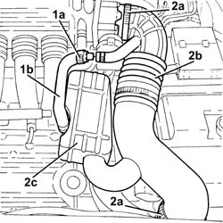
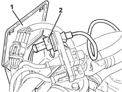
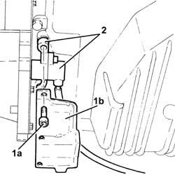

5510C34 rpm and timing sensor (single) - r+r
- Path
- Procedures > 55 ELECTRICAL EQUIPMENT > 5510 ENGINE IGNITION > 5510C coil, ecu, sensors > 5510C34 rpm and timing sensor (single) - r+r
- Kind
- repair procedure (removal / refitting; the operation number is the code)
- Applies to
- engines: 3.2 V6; all production periods
- Interactive page
- https://sloeber94.github.io/elrnDB-a147/en/#/3025504
Applies to: engines: 3.2 V6; all production periods
 Removing
Removing
 Refitting
RefittingPosition the vehicle on the ramp.
Ensure that the ignition key is in the OFF position, then disconnect the negative battery terminal (-).
 | Name | Connector |
|---|---|---|
- | Battery |
1. Loosen the band (1a) and disconnect the oil vapour recirculation pipe (1b) from the corrugated hose.
2. Loosen the bands (2a) and remove the corrugated hose (2b), complete with resonator (2c).

Applies to: engines: 3.2 V6; all production periods
1. Open the electrical connections box cover.
2. Disconnect the electrical connection for the rpm sensor.
Release the engine rpm sensor electrical wiring from the fixings.

Applies to: engines: 3.2 V6; all production periods
Proceed with removal 7055B54 under-engine guard - r r .
Proceed with removal 1076B82 left exhasust pipe between catalytic preconverter and converter r r .
1. Undo the bolts (1a) and remove the rpm sensor protection (1b).
2. Remove the rpm sensor complete with support.

Applies to: engines: 3.2 V6; all production periods
Refitting
RemovingRefit the rpm sensor and mount.
Replace the engine rpm sensor protection in its housing and fix it using the bolts.
Proceed with refitting 1076B82 left exhasust pipe between catalytic preconverter and converter r r .
Proceed with refitting 7055B54 under-engine guard - r r .
Secure the engine rpm sensor wiring to the fastenings.
Connect the electrical connection for the rpm sensor.
Close the electrical connections box cover.
Place the corrugated hose, complete with resonator, back in its housing and tighten the bands.
Connect the oil vapour recirculation pipe to the corrugated hose and tighten the band.
Connect the negative (-) battery terminal.
Remove the car from the ramps.
Topics linked from this page (4)
- 1056B81 run electronic ignition/injection control unit (single) self-learning procedure
- 1076B82 left exhasust pipe between catalytic preconverter and converter r r
- 7055B54 under-engine guard - r r
- A1B Battery ( Connectors )
Topics that link to this page (6)
- 1020A20 crank case oil sump - r + r clean seals for sealant application
- 1020D10 front crank shaft oil seal cover - r + r and replace seals with timing belt removed
- 1020D12 front crank shaft oil seal cover - r + r and replace seals
- 1020D51 crank shaft rear mount - apply silicone to mating surfaces
- 1084B12 engine oil pump - r+r
- 1084B23 oil pump control return - r r